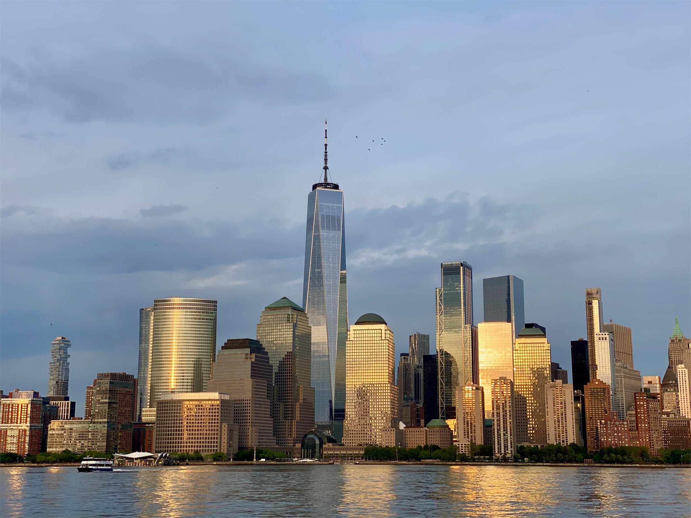
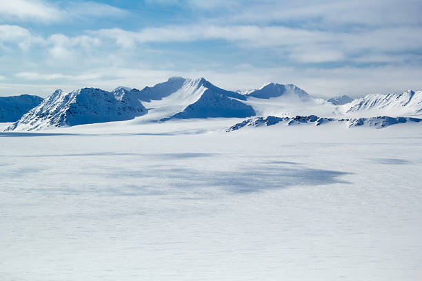
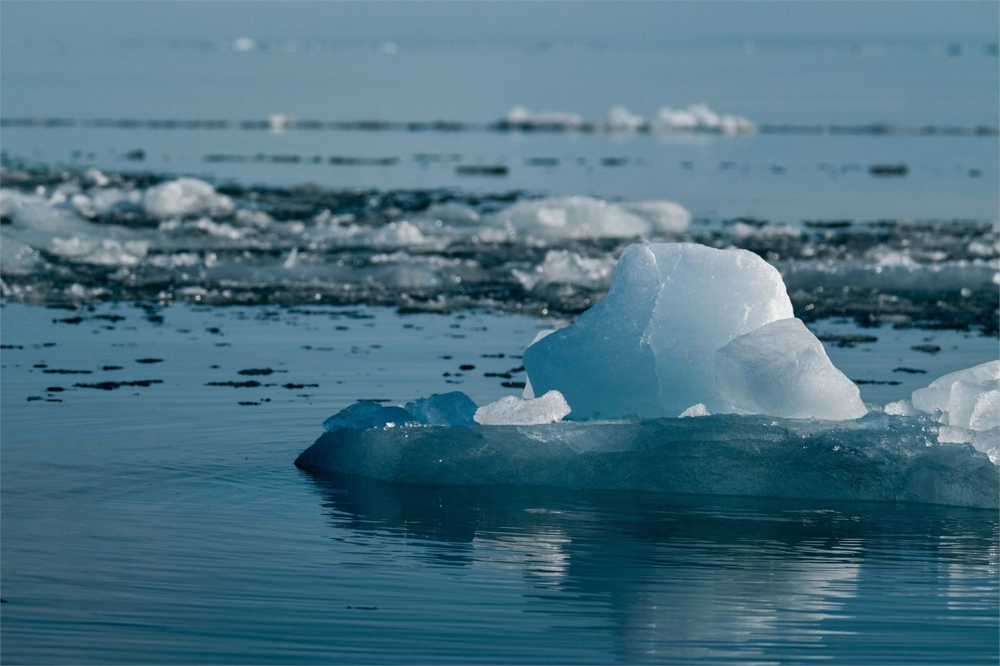
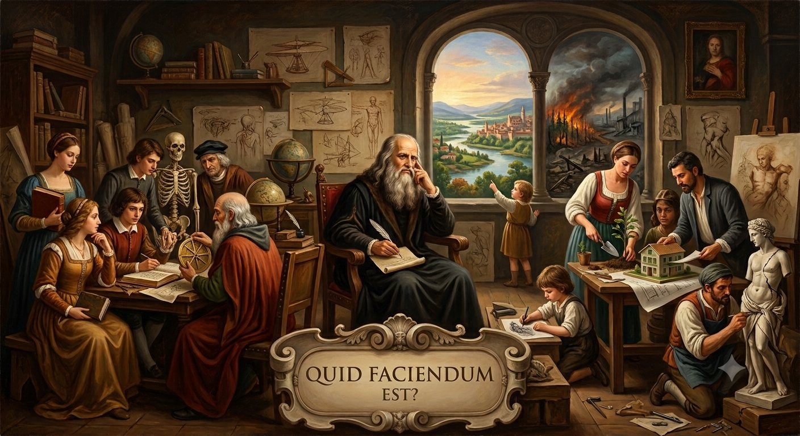

Sürdürülebilir
Kalkınma
Hedefleri
Birleşmiş Milletler'in 17 hedefi, gezegeni ve insanlığı kurtarmak için çizilen küresel haritadır. İklim krizi bu hedeflerin tamamını tehdit ediyor.

Soyut raporları ve karmaşık grafikleri bir kenara bıraktık. İklim krizi uzak kutuplardaki eriyen buzullardan ibaret değil; her gün soluduğumuz havada, attığımız her adımda ve aldığımız her kararda saklı. Gerçeği tüm çıplaklığıyla hissetmeye hazır mısınız?
Birleşmiş Milletler'in 17 hedefi, gezegeni ve insanlığı kurtarmak için çizilen küresel haritadır. İklim krizi bu hedeflerin tamamını tehdit ediyor.
İklim değişikliği gökten inmedi; onu biz, özellikle son 150 yılda fosil yakıt yakarak, ormanları yok ederek ve üretim biçimimizle inşa ettik. Sebepleri anlamak, çözümün ilk adımıdır.
Elektrik üretimi, ısınma ve sanayi için kömür, petrol ve doğal gaz yakmak, küresel sera gazı emisyonlarının %75'inden fazlasının kaynağı. Her kilovat saat hâlâ büyük ölçüde fosil yakıtla üretiliyor.
Almanya'nın en büyük linyit ocaklarından biri; kömür çıkarmak için köyler boşaltılıyor, ormanlar kesiliyor ve binlerce hektarlık alan devasa bir çukura dönüşüyor.
Dünya kömür tüketiminin yarısından fazlasını tek başına gerçekleştiren Çin'de, binlerce aktif termik santral küresel kömür kaynaklı CO₂ emisyonunun en büyük tekil kaynağını oluşturuyor.
Boru hatlarındaki sızıntılar ve fazla gazın yakılması (flaring), on yıllardır bölgenin sucul ekosistemlerini kirletip yerel toplulukların tarım ve balıkçılık gelirini yok ediyor.
ABD'nin en büyük ham petrol üretim merkezi; kuyu başlarından sızan metan, bazı ölçümlerde havzanın yakıt tüketiminden kaynaklanan emisyondan bile daha güçlü bir ısınma etkisi yaratıyor.
Dünyanın önde gelen sıvılaştırılmış doğal gaz ihracatçılarından Avustralya'da, kıyı tesislerinden kaynaklanan metan kaçakları uydu verileriyle ancak son yıllarda sistematik olarak izlenmeye başlandı.
Jharkhand ve Odisha eyaletlerindeki açık ocak madenler, milyonlarca insanı hem solunum yollarını tahriş eden kömür tozuna hem de bölgenin yüksek CO₂ emisyon yüküne maruz bırakıyor.
Ormanlar atmosferdeki karbonu emen doğal süngerlerimiz. Her yıl kaybedilen milyonlarca hektar orman, hem bu karbon yutağını yok ediyor hem de depolanmış karbonu atmosfere geri salıyor.
Brezilya'da sığır otlatma ve soya tarımı için her yıl milyonlarca hektar orman açılıyor; dünyanın en büyük karbon yutaklarından biri bu baskı altında küçülmeye devam ediyor.
Endonezya ve Malezya'da palmiye yağı plantasyonları için temizlenen ormanlar, orangutan başta olmak üzere adaya özgü pek çok türün yaşam alanını yok ediyor.
Dünyanın Amazon'dan sonraki en büyük yağmur ormanı, kereste ticareti, madencilik ve küçük ölçekli tarımın artan baskısı altında giderek küçülüyor.
Palmiye yağı tarımı için kurutulan tropikal turbalıklar, binlerce yıldır toprakta biriken karbonu hızla atmosfere salıyor; kurumuş turba aynı zamanda büyük orman yangınlarına zemin hazırlıyor.
Amazon kadar gündeme gelmese de Cerrado, küresel soya ve sığır talebinin baskısıyla her yıl yaklaşık 1 milyon hektar kaybediyor; oysa bölge kendine özgü zengin bir biyoçeşitliliğe ev sahipliği yapıyor.
Odun kömürü üretimi ve geçimlik tarım, Tanzanya ve Mozambik'teki Miombo ormanlarını hızla tahrip ediyor; yerel halkın çoğu için uygun fiyatlı bir enerji alternatifi bulunmuyor.
Çimento, çelik ve kimyasal üretimi, hem enerji yoğun süreçler hem de üretimin kendisinden kaynaklanan kimyasal reaksiyonlar nedeniyle emisyonların önemli bir kısmını oluşturuyor.
Almanya'nın tarihi ağır sanayi merkezinde yüksek fırınlar ve çelik tesisleri yüzyılı aşkın süredir bölgenin emisyon profilini belirliyor; dönüşüm için yeşil hidrojen tabanlı üretim planlanıyor.
Hindistan ve Çin'deki tesisler küresel çimento üretiminin yarısından fazlasını karşılıyor; hem yüksek sıcaklıkta pişirme süreci hem de kalkerin kimyasal dönüşümü büyük miktarda CO₂ açığa çıkarıyor.
Yoğun petrokimya tesisleri kompleksi, ABD'nin en büyük endüstriyel emisyon bölgelerinden birini oluştururken çevredeki yerleşim bölgelerinde hava kalitesi sorunlarını da beraberinde getiriyor.
Küresel alüminyum üretiminin %60'ından fazlasını gerçekleştiren Çin tesisleri büyük ölçüde kömür enerjisiyle çalışıyor; bu da ton başına düşen karbon izini dünya ortalamasının çok üzerinde tutuyor.
Ülke genelindeki 140.000'den fazla geleneksel tuğla fırını, düşük verimli katı yakıt kullanarak hem CO₂ hem de sağlığa zararlı kara karbon (kurum) salımına yol açıyor.
Orta Avrupa'daki petrokimya tesisleri, hem üretim süreçlerindeki enerji yoğunluğu hem de plastik atığın yakılmasıyla yüksek emisyon değerleri üretmeye devam ediyor.
Hayvancılık metan, gübre kullanımı ise nitröz oksit salımına yol açıyor. Bu iki gaz, CO₂'den çok daha güçlü ısınma etkisine sahip.
Endüstriyel ölçekte et üretimi için ayrılan geniş otlaklar hem ormansızlaşmayı tetikliyor hem de sığırların sindirim süreci kaynaklı metan salımını artırıyor.
Su altında bırakılan pirinç tarlalarında organik madde oksijensiz ortamda ayrışıyor; bu anaerobik süreç, CO₂'den çok daha güçlü ısınma potansiyeline sahip metanın önemli kaynaklarından birini oluşturuyor.
Verimi artırmak için kullanılan aşırı azotlu gübreler, topraktan atmosfere CO₂'den çok daha güçlü ısınma potansiyeline sahip nitröz oksit salınımına yol açıyor.
Küresel avokado talebindeki patlama, Michoacan eyaletindeki ormanların tarım arazisine dönüştürülmesine, yoğun su tüketimine ve artan pestisit kirliliğine neden oluyor.
Yüzlerce kilometre boyunca tek tip mısır ya da soya yetiştirilen alanlarda toprak karbonu hızla tükeniyor, doğal biyoçeşitlilik neredeyse sıfıra iniyor.
Dünyanın en yoğun hayvancılık sektörüne sahip ülkelerinden biri olan Hollanda, aşırı gübre ve amonyak salımı nedeniyle AB'nin nitrojen krizinin merkezinde yer alıyor.
Karayolu, deniz ve hava taşımacılığı küresel emisyonların beşte birine yakınını oluşturuyor; elektrikli ve düşük karbonlu ulaşıma geçiş bu yükü doğrudan azaltabilir.
Dünyanın en yoğun karayolu trafiğine sahip şehirlerinden biri; günlük milyonlarca özel araç yolculuğu, kentin en büyük tekil emisyon kaynaklarından birini oluşturuyor.
Ağır fuel-oil ile çalışan dev konteyner gemileri küresel ticaretin omurgasını oluştursa da, denizcilik sektörü kükürt oksit ve CO₂ salımıyla iklim ve hava kalitesi üzerinde ciddi bir baskı yaratıyor.
Kıtalar arası uçuşların yüksek irtifada bıraktığı kondensasyon izleri ve azot oksitler, havacılığın iklim etkisini yalnızca yakılan yakıtın CO₂'siyle sınırlı tutmuyor.
Dünyanın en yoğun uluslararası havalimanlarından biri; yılda 90 milyonu aşan yolcu trafiğiyle küresel havacılık emisyonlarının sembol noktalarından birine dönüştü.
Jakarta ve diğer büyük şehirlerde 100 milyonun üzerinde motosiklet, düzenli denetime tabi olmayan egzoz emisyonlarıyla hem karbon salımını hem de yerel hava kirliliğini ağırlaştırıyor.
İki stratejik kanalda uzun süre bekleyen ya da yavaş seyreden devasa tankerlerin gereksiz yakıt tüketimi, denizcilik emisyon hesaplarında genelde göz ardı edilen büyük bir kalemi oluşturuyor.

Bugün atılan adımlar sürdürülürse, 2075'te emisyonlar, orman kaybı ve okyanus ısınması düşük seviyelerde kalır.



Şehir hava kalitesi güvenli sınırlarda kaldığı için sabah parkta maskesiz koşuya çıkabiliriz.
Su kaynakları korunduğu için musluktan doldurduğumuz suyu hiç tereddüt etmeden içebiliriz.
İstikrarlı hasat dönemleri sayesinde markette mevsiminde, çeşitli ve uygun fiyatlı taze ürün bulabiliriz.
Aşırı sıcak dalgası ve hava kirliliği riski düşük olduğu için çocuklarımızı güvenle dışarı çıkarabiliriz.
Şebekenin büyük kısmı güneş ve rüzgârla beslendiği için düşük, öngörülebilir faturalar ödeyebiliriz.
Aşırı hava olayları seyrekleştiği için tatil planlarımızı yıllar öncesinden, afet riski düşünmeden yapabiliriz.
Eylemsizlik sürerse, 2075'te altı boyutun tamamı kritik eşiklerin üstüne çıkar.



Sabah işe çıkmadan önce hava kalitesi endeksini kontrol edip gerekirse maske takmak zorunda kalacağız.
Su kaynakları kuraklıktan daraldığı için musluk suyunu güvenle içemeyecek, temiz su almak için kuyrukta bekleyeceğiz.
Aşırı sıcak dalgaları klimasız bir günü imkânsız hale getirecek; artan talep elektrik kesintilerine yol açacak.
Yaşadığımız yer su altında kalınca ya da kuraklıktan çölleşince, başka bir şehre taşınmak zorunda kalacağız.
Yerel hasatlar azaldığı için market raflarında taze yerine ithal, pahalı ve sınırlı çeşitte gıdaya razı olacağız.
Sıklaşan aşırı hava olayları yüzünden tatil ve seyahat planlarımızı son anda felaket uyarılarına göre değiştirmek zorunda kalacağız.

Her gün attığın küçük adımlar, toplamda büyük bir fark yaratır.
Gerçek dönüşüm politika, teknoloji ve kolektif eylemle gelir.
Enerji verimli cihazlar ve LED aydınlatma aynı işi çok daha az elektrikle yapar. Bekleme modundaki cihazların çektiği "hayalet enerji" bile fark yaratabiliyor — bu küçük alışkanlıklar yılda 200 kg'a kadar CO₂ tasarrufu sağlayabilir.
Ulaşım, bireysel karbon ayak izinin en büyük kalemlerinden biri. Toplu taşıma, bisiklet ya da yürüyüşü tercih etmek; uzun mesafelerde de trenin uçağa göre yolcu-km başına ortalama 8 kat daha az CO₂ üretmesi, ulaşım seçimlerini iklim açısından belirleyici kılıyor.
Gıda üretimi küresel sera gazı emisyonlarının önemli bir kısmından sorumlu; kırmızı et bu payın en büyük tekil kaynağı. Tüketimini azaltıp yerel, mevsimsel ve bitki ağırlıklı beslenmeye yönelmek bireysel karbon ayak izini belirgin biçimde küçültüyor.
Her ürünün üretiminde harcanan enerji ve hammadde, satın alma kararlarını iklim açısından önemli kılıyor. Daha az ve bilinçli satın almak, ürünleri uzun süre kullanmak; onarmak ve ikinci eli tercih etmek hem atığı hem de üretim kaynaklı emisyonları azaltıyor.
Yeşil alanlar hem karbon depoluyor hem de yerel biyoçeşitliliği destekliyor. Balkonunda ya da bahçende bitki yetiştirmek küçük bir adım gibi görünse de, olgun bir ağacın ömrü boyunca ortalama 25 kg CO₂ emdiği düşünülürse toplu etkisi büyüyor.
Bireysel adımlar önemli, ama en büyük etki toplu sesle ortaya çıkıyor. Çevrendeki insanları bilinçlendirmek ve oy verirken iklim politikasını önceliklendirmek, sistemsel değişimi hızlandıran dolaylı ama güçlü bir yol.
Küresel enerji üretiminin fosil yakıtlardan güneş, rüzgâr ve diğer temiz kaynaklara kaydırılması, emisyonları azaltmanın en yüksek etkili yollarından biri. Hükümetlerin ve şirketlerin yatırım önceliklerini bu yönde değiştirmesi dönüşümün hızını doğrudan belirliyor.
Karbon vergisi ve emisyon ticaret sistemleri, sera gazı salımının gerçek maliyetini fiyatlara yansıtarak "kirleten öder" ilkesini işletir. Bu mekanizmalar, temiz teknolojilere geçişi piyasa içinden hızlandıran güçlü araçlar.
Ormanlar dünyanın en büyük doğal karbon yutaklarından biri; hem ormansızlaşmayı durdurmak hem de büyük ölçekli ağaçlandırma projeleri yürütmek, atmosferdeki karbonu dengelemenin en doğrudan yollarından biri.
İklim krizi sınır tanımıyor; Paris Anlaşması gibi küresel çerçeveler, ülkelerin ortak, ölçülebilir ve denetlenebilir hedefler etrafında birleşmesini sağlayarak bireysel çabaların toplamından daha büyük bir etki yaratıyor.
Çimento, çelik ve kimya gibi ağır sanayiler, üretim süreçlerinin doğası gereği kolayca elektrifiye edilemiyor. Yeşil hidrojen ve karbon yakalama teknolojileri, bu sektörlerin emisyonlarını azaltmanın önündeki en kritik açık.
2050'de dünya nüfusunun %68'inin kentlerde yaşayacağı öngörülüyor; bu da şehir planlamasını iklim mücadelesinin merkezine taşıyor. Toplu taşımayı, yaya bölgelerini ve yeşil alanları bütünleştiren akıllı şehirler hem emisyonu azaltıyor hem yaşam kalitesini artırıyor.
2015'te 195 ülke, küresel ısınmayı 2°C'nin belirgin şekilde altında tutmayı ve mümkünse 1,5°C ile sınırlamayı taahhüt etti. Ülkeler her yıl COP zirvelerinde emisyon hedeflerini (NDC) güncelliyor; 2023'teki ilk Küresel Stok Alma değerlendirmesi, taahhütlerin ne kadarının gerçek azaltıma dönüştüğünü resmen ölçtü.
Glasgow'dan Dubai'ye, ülkeler her yıl bir araya gelip emisyon azaltım taahhütlerini ve iklim finansmanı görüşmelerini masaya yatırıyor. 2023'teki COP28'de, tarihte ilk kez "fosil yakıtlardan uzaklaşma" ifadesi resmi karar metnine girdi — sembolik ama önemli bir eşik.
Güneş panellerinin maliyeti son on yılda yaklaşık %80 düştü; bugün dünyanın çoğu bölgesinde güneş ve rüzgâr enerjisi yeni kurulan fosil yakıt santrallerinden daha ucuz. 2024'te küresel yenilenebilir enerji kapasitesi 4.200 GW'ı aştı.
Küresel elektrikli araç satışları art arda rekor kırıyor; büyük otomotiv üreticileri içten yanmalı motorlu araç üretiminden çıkış için takvim açıklıyor. Buna paralel olarak şarj altyapısı da her yıl hızla genişliyor.
Avrupa Birliği, 2019'da 2050'ye kadar net sıfır emisyon hedefini yasal olarak bağlayıcı hale getiren Yeşil Mutabakat'ı kabul etti. Karbon sınırında düzenleme mekanizması (CBAM) ve sıkı emisyon hedefleri artık yürürlükte, üye ülkelerin politikalarını doğrudan şekillendiriyor.
Lityum-iyon batarya maliyetleri 2010'dan bu yana %90'ın üzerinde geriledi. Bu düşüş, hem elektrikli araçları hem de şebeke ölçekli enerji depolamayı fosil yakıtla ekonomik olarak rekabet edebilir hale getirdi.
Doğrudan hava yakalama (DAC) tesisleri dünya genelinde devreye giriyor; bu teknoloji atmosferden CO₂'yi doğrudan çekip yer altında depoluyor ya da yeniden kullanıma sokuyor. 2030'a kadar yılda milyonlarca ton yakalama kapasitesine ulaşılması planlanıyor.
Bu sayfa bir başlangıç noktası. İklim krizini daha derinlemesine anlamak isteyenler için güvenilir kaynaklar derledik.
Birleşmiş Milletler'in küresel iklim politikaları, anlaşma takibi ve resmi karar süreçlerine dair kapsamlı kaynak merkezi.
NASA'nın uydu gözlemleriyle beslenen, sürekli güncellenen küresel iklim verileri ve görselleştirmeleri.
Hükümetlerarası İklim Değişikliği Paneli — binlerce bilim insanının katkısıyla hazırlanan değerlendirme raporlarının resmi kaynağı.
CO₂ ve sera gazı emisyonlarına dair açık, güncel verilerle desteklenmiş kapsamlı görselleştirmeler ve analizler.
David Attenborough'un anlattığı, gezegenin ekolojik sınırlarını bilimsel verilerle ele alan Netflix belgeseli.
Dünyanın en kırılgan ekosistemlerini ve iklim değişikliğinin bu ekosistemler üzerindeki etkisini gözler önüne seren Netflix belgesel serisi.
Al Gore'un iklim krizine küresel farkındalık kazandıran, alanının öncü yapımlarından belgesel filmi.